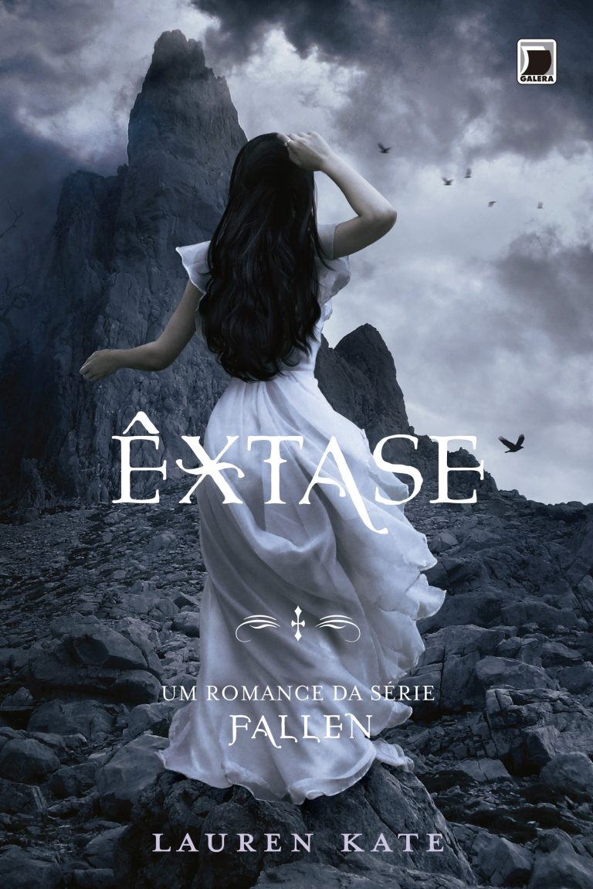

Êxtase - O Desfecho
"Todas as demais coisas à ruína se arrastam,
apenas o nosso amor não conhece o declínio."
✤
- John Donne, "O Aniversário"
Êxtase é um livro que me fez surtar! A ponto de achar que Lúcifer era uma escolha melhor para Luce do que Daniel. Não consegui superar meu ranço por ele no último livro.
Sobre este livro, a única coisa que posso citar é que ele é perfeito. Recomendo que leia! Ele traz muitas tramas e reviravoltas. Esqueça tudo o que sabia sobre Luce e Daniel, e prepare-se para descobrir Luce e Lúcifer. Toda a história anterior que pensávamos conhecer foi desmontada. Lauren Kate realmente se superou nessa reviravolta.